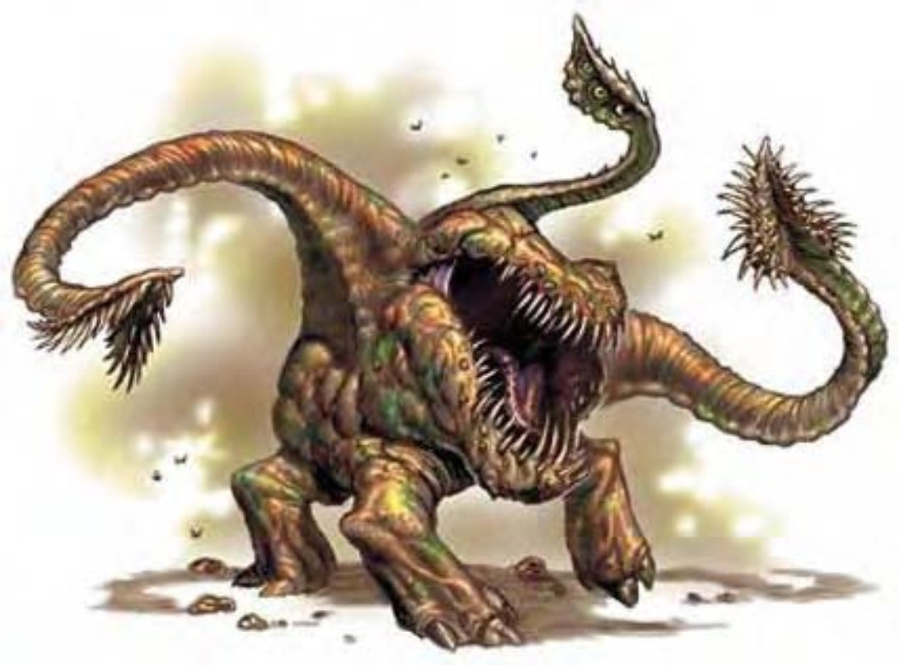

他看上去像是个膨胀的巨卵，皮肤坚若盘石。像藤蔓的体干由恶心的身体向外延伸2英尺，其上具有两只眼睛。巴嘴像是道大裂缝，布满了锋刃齿，成为身体的中心。他用三只结实的腿四处行走，两只长触手包覆在多刺的隆起肌肉之下。触手尖端是叶状附肢，长有更多刺状生成物。
食腐兽是古怪的地下怪物，潜伏在垃圾堆中。虽然这种主要食腐的生物可食用各种垃圾，但一有鲜肉上门他也不会拒绝。
食腐兽多数时间都待在巢里与腐尸、碎肉和类似的垃圾为伴。他通常将自己埋身于废渣中，只伸出知觉体干，其上具有眼睛与嗅觉器官。食腐兽会躺上好几小时，把食物一一推入嘴中。地下智慧生物有时会与食腐兽共存，将他视为便利的垃圾处理机。他们只要把垃圾倒入食腐兽巢穴中，就可避免食腐兽展开攻击。
一般的食腐兽身体直径约8英尺，重约500磅。
食腐兽通晓通用语。
| 资料栏位 | 食腐兽 (Otyugh) 大型异怪 |
| 生命骰 | 6d8+9 (36HP) |
| 先攻 | +0 |
| 速度 | 20英尺 (4格) |
| 防御等级 | 17 (-1体型、+8天生)、接触9、措手不及17 |
| 基本攻击/擒抱 | +4 / +8 |
| 攻击 | 触手+4近战 (1d6) |
| 全力攻击 | 2触手+4近战 (1d6) 及 啮咬-2近战 (1d4) |
| 占据/触及 | 10英尺 / 10英尺 (使用触手时15英尺) |
| 特殊攻击 | 紧勒1d6、疾病、精通擒抱 |
| 特殊能力 | 黑暗视觉60英尺、灵敏嗅觉 |
| 豁免 | 强韧+3、反射+2、意志+6 |
| 属性 | 力量11、敏捷10、体质13、智力5、感知12、魅力6 |
| 技能 | 躲藏-1*、聆听+6、侦察+6 |
| 专长 | 警觉、健壮、专攻武器 (触手) |
| 环境 | 地底 |
| 组织 | 单独、成双或聚集 (3-4) |
| 宝藏 | 标准 |
| 阵营 | 通常绝对中立 |
| 进化 | 7-8HD (大型)；9-18HD (超大型) |
| 等级修正值 | ― |
食腐兽感到受威胁或饥饿时才会攻击活的生物，其他时候则多半躲藏起来。食腐兽会用触手挥砍并挤压对手，并用以将猎物抓入嘴中。
紧勒 (特异)：一旦通过擒抱检定，食腐兽即自动造成触手伤害。
疾病 (特异)：腐热症――啮咬、强韧检定DC=14、潜伏期1d3天；伤害1d3敏捷与1d3体质。豁免检定DC的调整值与体质调整值相同。
精通擒抱 (特异)：如果食腐兽利用触手击中对手，即可利用即时动作进行擒抱攻击，且不会引发对方借机攻击。如果擒抱成功，则可定住对手进行“紧勒”。
技能：*当藏于巢穴时，食腐兽的天然色让他进行“躲藏”检定具有+8种族加值。